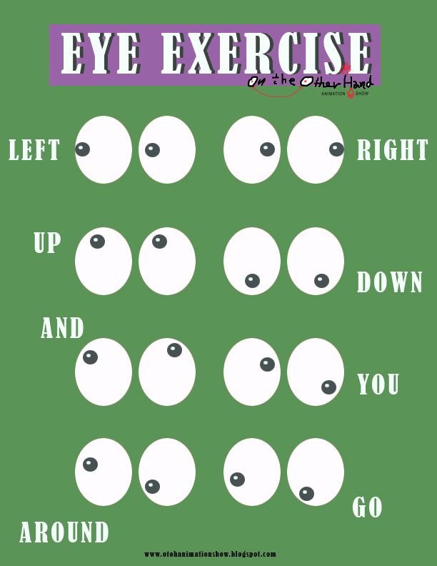

How to Improve Eyesight Naturally: 7 Eyes Exercises (with pictures) - TIMESHOOD
2020.12.07 12:35
Home Lifestyle Health Workout Yoga Weight Loss Beauty Food Holidays DIY TIMESHOOD Home Lifestyle Health Workout Yoga Weight Loss Beauty Food Holidays DIY Home Health How to Improve Eyesight Naturally: 7 Eyes Exercises (with pictures) Health
How to Improve Eyesight Naturally: 7 Eyes Exercises (with pictures)
By Hood - September 17, 2017 0 2001
This post may contain affiliate links. Please read our disclosure for more info.
Eyes are the beautiful and sensitive parts of our body that need extra care. But we always ignore them that lead to weakens eyesight.
Like other body parts, we can also maintain our eyes health by exercise.
Yes! Even eyes need exercise to maintain its vision.
These powerful eyes exercises will strengthen your eyes muscles, improve focus by eyes movements and stimulate your vision center.
People are unaware about eyes exercise to improve eyesight, very few people choose to maintain their eyes health by doing eyes exercise.
If your eyesight weakens, then you need to know how eyes exercise helps to improve eyesight?
Is it possible to improve eyesight within a week/month?
Well, Guys! There are no shortcuts to improve your eyesight within a week or month. No medical study claimed so fast result yet.
Everything takes time, and sure it will take too. Just keep practicing these exercises with a healthy diet to improve your eyesight.
It will maintain your current eyesight level and keep it improving day by day.
Don’t skip eye checkups with doctors for perfect guidance as they can suggest you best as per your illness level.
How to improve eyesight naturally?
When we talk about a natural way to improve eyesight then lots of fruits , green vegetables, juice, and vitamins take place in treatment.
As these natural treatments are the highly effective dose for the body in all aspects.
Eating right vitamins and minerals for eyes can solve your many eyes issues. So, include lots of green vegetables and fruits in your diet as these are a great source of vitamins, minerals. According to expert, good eyesight depends on your diet.
Vitamin A, C, and E are important for eye health. You can also take supplements for eyes and keep monitoring your health for best results.
How to prepare for eyes exercise to improve eyesight
Before trying these eyes exercise to improve eyesight, you need to prepare your eyes for exercise. Here is how
Talk to your doctors
It’s a good idea to get a professional eye exam before trying these eyes exercise to improve eyesight. Although there is no harm in trying these eyes exercise. But an advice from your optometrist can help you to find out your existing eyes problems or issues. You should ask if these eyes exercises will be beneficial for you or not.
Palm your eyes
To relax, close your eyes and apply light pressure on them by palming, to spread tears films evenly in your eyes. This warm massage help to reduce stimuli to your eyes and brain.
Start by rubbing your palms together until you feel warm. Close your eyes and cover them with your warm palms. Don’t put pressure to your eyeballs.
Make sure to tighten your fingers so that light can’t enter through fingers during palming as it will stimulate rather than relax your eyes, and deter the process of relaxation.
Just imagine deep blackness and focus on it. Repeat this relaxation process for 3 minutes or more before starting eyes exercise to improve eyesight.
Massage your eyes
Massage is another great way to reduce tension in eyes, as it helps to improve blood circulation around your eyes and face. Do it regularly before starting eyes exercise.
How to massage your eyes to improve eyesight:
Massage your pressure points:
Pressure points are located in areas such as temples, back corners of eyes and middle of eyebrows. Combine each point by massaging from 1 to the last number about twice a day.
Apply warm and cold compress:
Take 2 towels. Soak one towel in warm water, and another towel in cold water. Now place a warm towel on the face and cover your eyebrows, eyes (closed eyelids) and cheeks. After 2-3 minutes, remove the warm towel and place the cold towel on face for 3 minutes. Make sure to end with a cold compress.
Changing temperature on your face and eyes will cause vasoconstriction and vasodilation that will stimulate your face and the skin around your eyes.
Full face massage:
Take a towel and soak it in warm water. Rub this towel gently on your forehead, cheeks and neck area. Now use your fingertips to give a gentle massage on your forehead and closed eyes.
Eyelid massage:
First of all, wash your hands properly. Make sure to use antibacterial solution/soap. Then close your eyes and massage in circular motion with fingers for 2 minutes. Try to massage gently and avoid putting pressure during massage. Only light pressure with fingers tips can relax and stimulate your eyes.
Eyes Exercises-General instruction
To improve your eyesight, make sure to choose a place with proper lightening for exercise.
Bring smile on your face
Before starting eye exercise, try to be in the positive mood with a smile. This will reduce stress and tension you might be holding in your eyes. Feel yourself in calming and resting position before starting eye exercise to improve vision.
Breathe
Good breathing techniques are important in exercise and yoga , to supply more oxygen to your eyes and body. It helps to keep your eyes relaxed during exercise and make every move easy for your eyes.
Focus on your commitments
Before starting eyes exercise, you should make one commitment to yourself, and that will be your goal to improve eyesight. To fulfill this goal, you have to be regular and keep practicing every day.
Avoid head movements
Don’t move your head while doing zig zag and directional eye exercise as this exercise is not for the head.
Take off your glasses
Don’t practice these exercise with wearing glasses.
7 Eyes Exercises to Improve your Eyesight
1). Near and Far focusing Eyes Exercise
This is one of the oldest and effective eye exercises to improve eyesight. It strengthens the muscles of eyes and helps to maintains far and near vision.
Sit on a chair or stand in front of the blank wall and place your thumb/finger/any objects about 10 inches from your eyes and try to focus on it for 10-15 seconds. Now, place an object about 10 feet away and focus on it for 10-15 seconds. Again come back to near object and try to focus. Change your near and far object focus 5 times and practice one complete cycle 3 time.
2). Zooming Eyes Exercise to improve eyesight
Almost same exercise as above but the only difference is that your focus should not break during this exercise. You have to constantly adjust your focus on an object that you will keep zooming in and out.
https://timeshood.com/wp-content/uploads/2017/09/Exercise-Your-Eyes-zooming.mp4 Sit comfortably and keep your thumb 3 inches away in front of your eyes. Focus on your thumb while zooming in and out from eyes. Move your thumb until your arm is fully outstretched. Repeat this exercise 3 times once a week.You can also use pencil instead of the thumb. Keep a pencil in front of you at arms distance and move your arms slowly to your nose. Follow this pencil with your eyes until you lose focus on it.
3). Directional eyes exercise to improve eyesight
Moving your eyes in the different direction is the best way to do eye exercises to improve eyesight. It strengthens eyes muscles and keeps your vision healthy.
Up and Down:
Stand or sit upright and look ahead. Now, start with looking up and down your eyes without moving your head. Do this eyes exercise 3 times to improve eyesight.
Left and Right:
Stand or sit upright and keep your gaze straight. Now, look to the left and try to focus on what you see. Then look right and focus on what you see. Move your eyes from side to side for 5 times and repeat this cycle for 3 times.
Diagonal Eyes Exercise:
Look down to the left and focus on what you see. Move your eyes diagonally up on right and focus on what you see. Repeat this exercise 5 times. Then look straight ahead and do the same exercise looking down and to the right and then looking up and to the left. Repeat this complete cycle 3 times to improve eyesight.
4). Zig-Zag eyes exercise to improve eyesight
Zig-Zag pattern gives a gentle massage to your eyes. The two zig-zag patterns from top to bottom and left to the right provide perfect movement to your eyes.
Top to bottom zig-zag:
Look upright and keep moving your eyes from top to bottom in the left-right zig-zag Repeat this 3 times.
Left to right zig-zag:
Start from the left and keep looking on it’s up and down zig-zag Repeat 3 times.
5). Figure 8 eyes exercise to improve eyesight
Great exercise to control physical movements of your eyes.
Imagine a giant figure 8 on the floor, or make 8 on the floor about 10 feet away in front of you. Trace the figure slowly from both the direction (clock and anti-clockwise) for few minutes.
6). Rolling eyes exercise to improve eyesight
Rolling your eyes in a circle provide better eyes movements and therefore help to improve eyesight.
Roll your eyes in a circle:
Sit straight and relax. Now start looking to the left and roll your eyes slowly in a circular motion (clockwise). Do it clockwise and anticlockwise 5 times. Repeat this cycle for 3 times.
Roll your eyes in expanding circle:
Sit relax and move your eyes in a circular motion that keep on expanding from inside to outside.
7). End eyes exercise with palming
Always prefer to end with palming as I explained above. It gently soothes your eyes problems and makes them relax after an exercise session.
https://timeshood.com/wp-content/uploads/2017/09/Exercise-Your-Eyes-Palm.mp4Breathe deeply and feel relaxed for 1-2 minutes.
How long you need to practice to improve eyesight?
Make sure to practice these eyes exercise daily to improve eyesight. Results will not appear within a week, but sure you will be able to see the differences and improvements slowly.
For fast results, take healthy and nutritious diet, filled with lots of vitamins and minerals. As experts say, diet is important to keep your body healthy.
I am sure both the things, healthy diet and eyes exercise can double your efforts to improve eyesight.
Keep monitoring your eyes health and go for regular check up to your doctors to know actual improvements of your eyes health.
Things to note before doing eyes exercise:
These eyes exercise will not cure eye issue like myopia (nearsightedness), presbyopia (an inability to change focus from far to near) or astigmatism (blurred vision due to the shape of the cornea). No study claim to throw away your glasses by exercises within a week or month, as most of the optometrist tells. But these can help to improve your eyesight slowly and maintain your vision if practiced regularly. Go for regular checkups if you find any difficulty. There is no harm in trying these exercise. Healthy individuals can also practice it to avoid any vision related difficulty in future. People having a serious condition, like cataracts, blindness in one or both eyes, or recovering cornea injury, should avoid these exercise. Eat right food for eyes. Rest properly.Hope these eyes exercise will help you to maintain and improve your eyesight. Share this information with your loved ones who need it most. I also write about yoga, health, and nutrition. Stay connected with us via Pinterest , and don’t forget to like us on facebook for more healthy updates.
Eyes Exercises to Improve vision: Infographic
Share Tweet Flip WhatsApp Yum Reddit Share Email 9 Shares VIA wikihow TAGS Exercise for Eyes Exercise for Eyesight Eyes Exercise to improve eyesight Eyes Exercise to improve vision Eyes Exercises Health How to improve vision Improve Eyesight Improve vision Lifestyle Previous article 10 Powerful Yoga Poses to Reduce Stubborn Belly Fat Fast Next article Drink & lose weight naturally | Benefits of Green tea for weight loss Hood https://timeshood.com
RELATED ARTICLES MORE FROM AUTHOR
15 Effective DIY Detox Drinks to Lose Weight [with Benefits & Recipes]
8 Best Time to Drink Water
21-Day Detox Diet Plan: A Complete Guide to Cleanse Body
Leave a Reply Cancel reply
Connect with us!
11,977 Fans Like 485 Followers Follow 426 Followers Follow15 Effective DIY Detox Drinks to Lose Weight [with Benefits &...
Hood - September 21, 2020 921 Days Flat Abs Workouts Challenge: Beginners to Advanced Abs Exercise
Hood - September 4, 2020 010 Days Workout Plan to Get an Hourglass Shape: Total Body...
Hood - August 5, 2020 650 Healthy Habits to Improve Your Lifestyle [Infographic]
Hood - May 15, 2020 015 Types Stain Removing Hacks (Easy Steps): Wine, Coffee, Blood &...
Hood - May 4, 2020 0 ABOUT US Timeshood is your news, entertainment, music fashion website. We provide you with the latest breaking news and videos straight from the entertainment industry. FOLLOW US Contact Us Privacy Policy Terms of Use Affiliate Disclosure Disclaimer DMCA Policy © Copyright 2020 - Timeshood Timeshood.com has updated its privacy policy in compliance with EU Cookie legislation. By continuing to use this site, you are agreeing to our updated privacy policy. Accept Read More Privacy & Cookies Policy ClosePrivacy Overview
This website uses cookies to improve your experience while you navigate through the website. Out of these, the cookies that are categorized as necessary are stored on your browser as they are essential for the working of basic functionalities of the website. We also use third-party cookies that help us analyze and understand how you use this website. These cookies will be stored in your browser only with your consent. You also have the option to opt-out of these cookies. But opting out of some of these cookies may affect your browsing experience. Necessary Necessary Always EnabledNecessary cookies are absolutely essential for the website to function properly. This category only includes cookies that ensures basic functionalities and security features of the website. These cookies do not store any personal information.
Non-necessary Non-necessaryAny cookies that may not be particularly necessary for the website to function and is used specifically to collect user personal data via analytics, ads, other embedded contents are termed as non-necessary cookies. It is mandatory to procure user consent prior to running these cookies on your website.
Get FREE Newsletter Get more useful info to make your lifestyle easy.